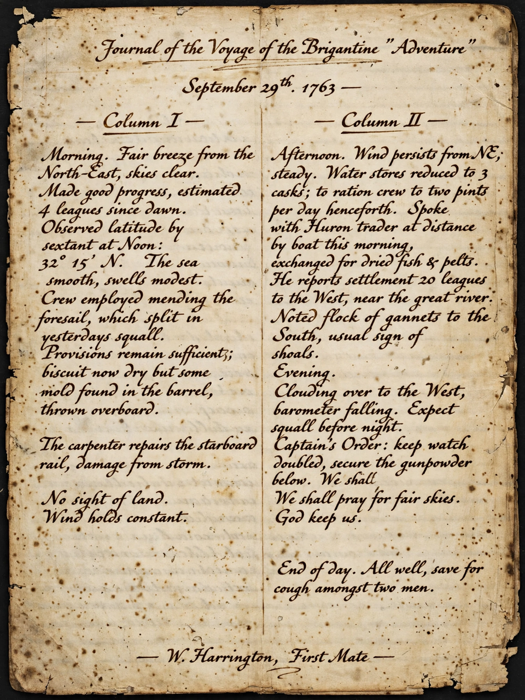

| Popol Vuh | |
|---|---|
| Language | K'iche' |
| Composed | c. 1554–1558, Chichicastenango, Guatemala |
| Surviving copy | Transcription by Francisco Ximénez, c. 1701–1703 (Newberry Library, Chicago) |
| Subject | K'iche' creation myth, hero saga, dynastic history |
| Name meaning | "Book of the Council" / "Book of the Mat" |

The Popol Vuh ("Book of the Council" or "Book of the Community") is a foundational sacred narrative of the K'iche' people, one of the Maya peoples of the Guatemalan highlands. Written in the K'iche' language shortly after the Spanish conquest, it recounts the creation of the world, the adventures of the Hero Twins in the underworld of Xibalba, and the genealogy of the K'iche' ruling lineages down to the conquest era.
The work opens with the creation: the gods Heart of Sky and the Sovereign Plumed Serpent fashion the earth from the primordial sea and attempt to create humanity — first from mud, then from wood — before succeeding with people formed from maize dough, the four first men. The middle portion tells of the Hero Twins, Hunahpu and Xbalanque, who descend to Xibalba, survive the houses of torment, defeat the lords of death in the ballgame, and rise to become the sun and moon. The final part narrates the migrations and dynastic history of the K'iche' kingdom.
The text was composed in alphabetic K'iche' around 1554–1558, probably drawing on older hieroglyphic and oral sources, in the shadow of the destruction that consumed the Maya codices. The original is lost; the work survives in a transcription with Spanish translation made by the Dominican friar Francisco Ximénez around 1701–1703 in Chichicastenango. Rediscovered in the 19th century, Ximénez's manuscript is now held by the Newberry Library in Chicago. Major modern translations include those of Dennis Tedlock (1985) and Allen J. Christenson (2003).
The Popol Vuh is often described as the most important single text of Indigenous American literature, preserving a cosmology and mythic history otherwise largely destroyed in the conquest. It remains culturally vital in Guatemala, where it is taught as a national treasure.
Hero Twins · Xibalba · Maya peoples · Maya codices · K'iche' people